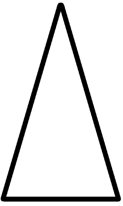
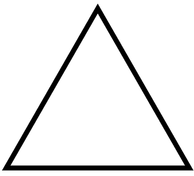
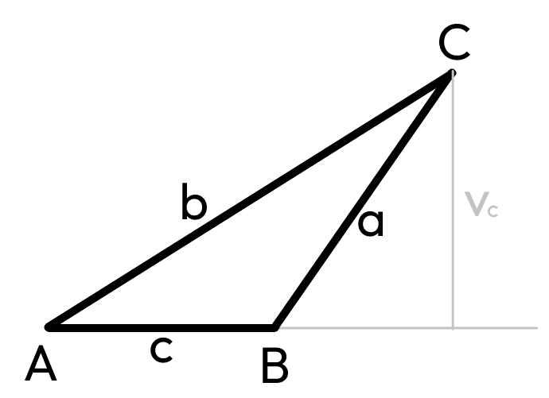
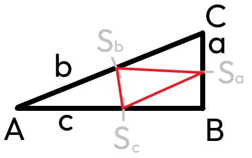
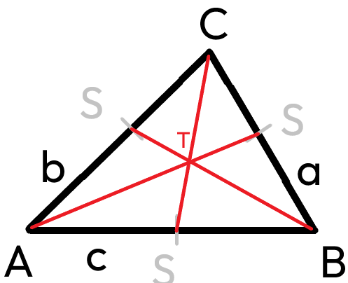
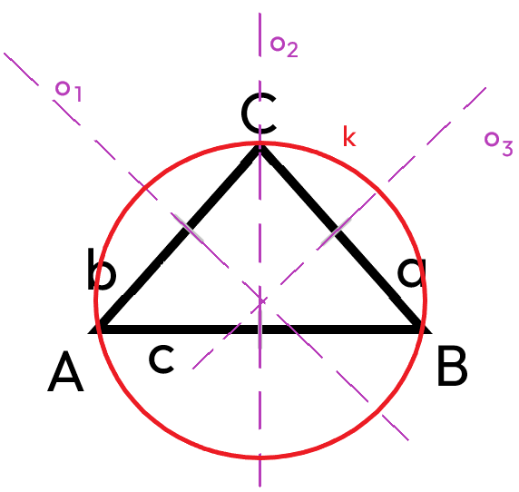
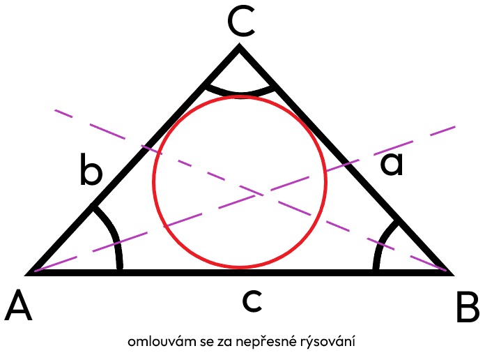
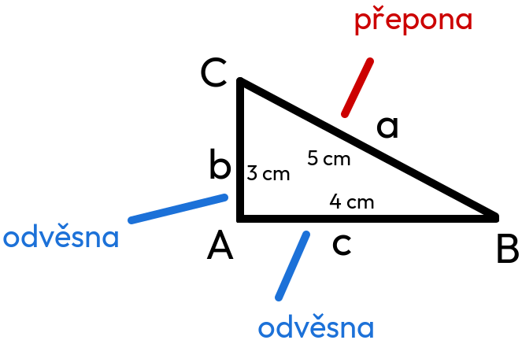

Trojúhelníky
Trojúhelník
obvod: a + b + c
obsah: (a × va) ÷ 2
Typy
- rovnoramenný 
- rovnostranný 
- obecný (jakýkoliv jiný)
Druhy
- pravoúhlý - 1 úhel 90°
- tupoúhlý - 1 úhel tupý
- ostroúhlý - 1 úhel ostrý
Výšky
přímka kolmá k jedné straně protínající nejvyšší bod trojúhelníku
Střední příčky
*to červené jsou střední příčky
Těžiště
*červené čáry jsou těžnice a průsečík těžnic T je těžiště
Kružnice opsaná
*kružnice opsaná je kružnice k
*osy o1, o2 a o3 jsou osy stran
Kružnice vepsaná
kružnice vepsaná se rýsuje ze středu os úhlů
Věty
SUS
Věta SUS je ze zadání strany, úhlu a strany.
USU
Věta USU je ze zadání úhlu, strany a úhlu.
SSS
Věta SSS je ze zadání strany, strany a strany.
Pythagorova věta
Základy

přepona .... 5 cm (je vždy nejdelší)
odvěsna .... 4
cm
odvěsna .... 3 cm
Věta
„Obsah čtverce sestrojeného nad přeponou pravoúhlého trojúhelníku se rovná součtu obsahu čtverců nad oběma odvěsnami.“
a znamená to:
a² + b² = c²
Pokud ale hledáme odvěsnu, budeme kratší stranu odečítat od té delší.
ALE V TROJÚHELNÍKU SESTROJENÉM NAHOŘE PLATÍ:
c² + b² = a²
Vypočítání trojúhelníku nahoře
*aneb přepony
přepona .... 5 cm
odvěsna .... 4 cm
odvěsna
.... 3 cm
c² + b² = a²
4² + 3² = 5²
16 + 9 = 25
25
= 25
Trojúhelník je pravoúhlý.